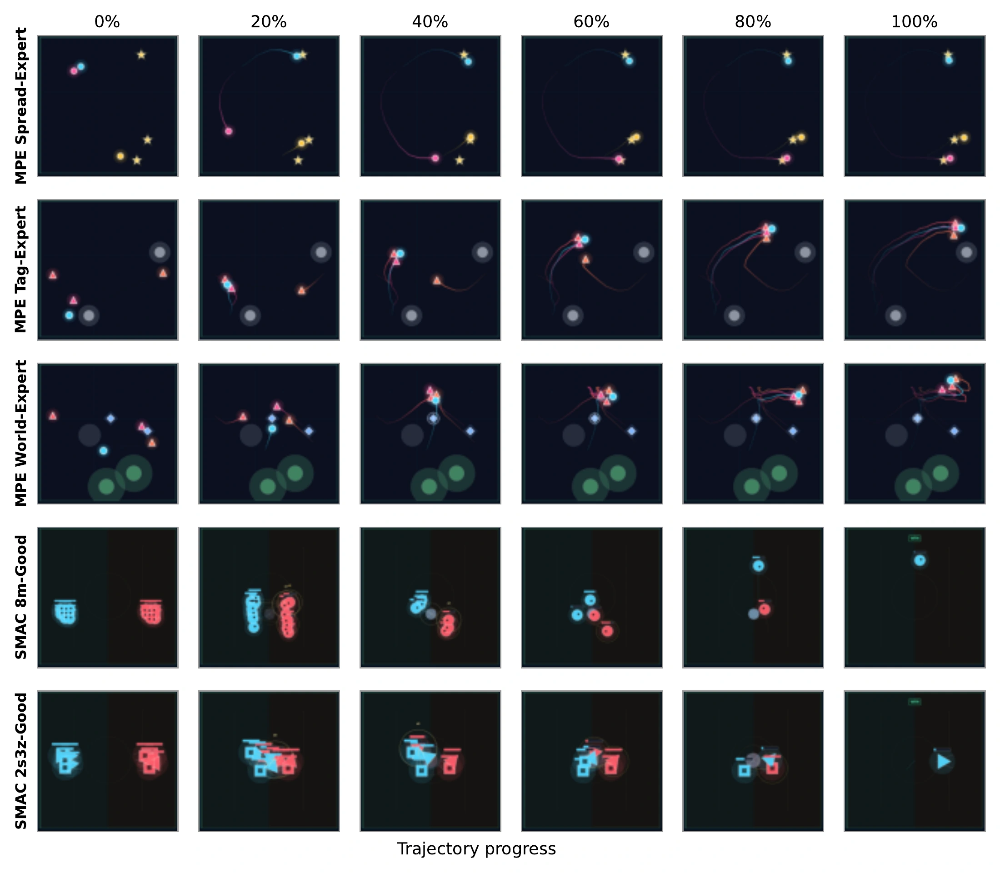
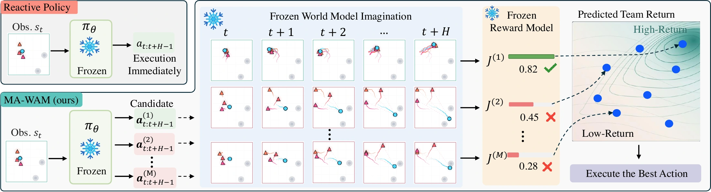
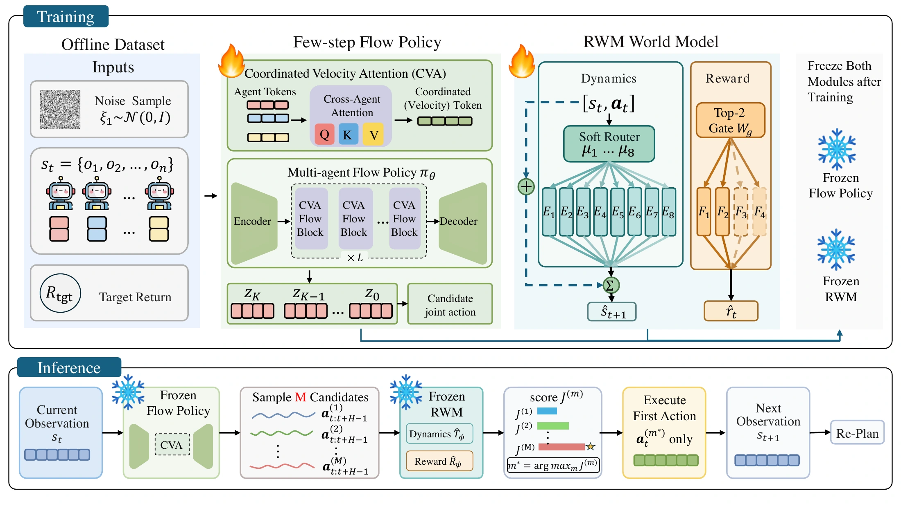
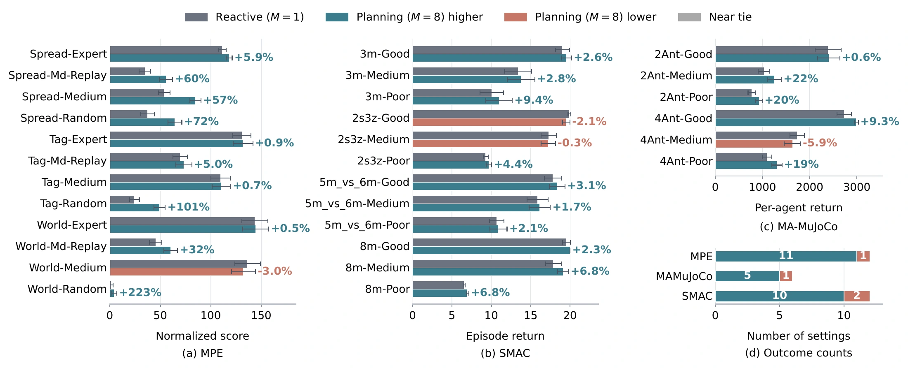
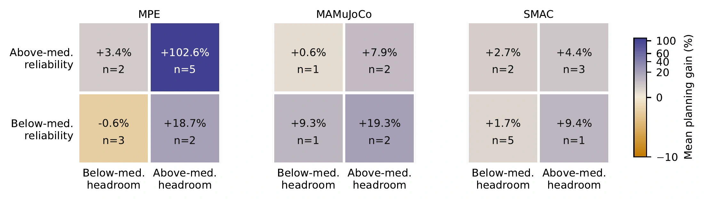

{kind=link}
{kind=link}
Propose
Sample candidate joint-action sequences from the frozen flow policy.

LOOK AHEAD. ACT TOGETHER.
MA-WAM compares candidate joint futures before acting, using a routed world model to choose a coordinated action sequence at test time.
Sun Yat-sen University
01 / Overview
A reactive policy executes one proposed joint action without comparing its consequences with other possibilities. MA-WAM lets a frozen multi-agent flow policy propose several joint-action sequences, then uses a Routed World Model (RWM) to predict their outcomes. The planner selects the sequence with the highest predicted team return, executes its first action, and replans from the next observation.

02 / Method
The world model conditions on the joint observation and action to represent dependencies among agents. Routing combines shared experts for dynamics and reward prediction. The flow policy and world model remain fixed during deployment.

Sample candidate joint-action sequences from the frozen flow policy.
Roll out candidates with RWM and rank their predicted cumulative team returns.
Execute the first joint action of the selected sequence and plan again at the next observation.
03 / Benchmarks
Continuous and discrete cooperation across locomotion, multi-agent particle environments, and StarCraft micromanagement.
04 / Results
MA-WAM is evaluated on 30 task and dataset combinations across MAMuJoCo, SMAC, and MPE. It achieves higher mean return than direct execution in 26 settings. The reported gains compare planning with direct execution under the paper’s fixed-denoising protocol.

The manuscript has not yet been publicly released.
05 / Analysis
Planning benefits depend on both the quality of the candidate set and the reliability of the world model’s ranking. The diagnostics relate planning gains to reactive-policy headroom and ranking reliability; they do not imply that planning improves every setting.

{kind=link}
{kind=link}
{kind=link}